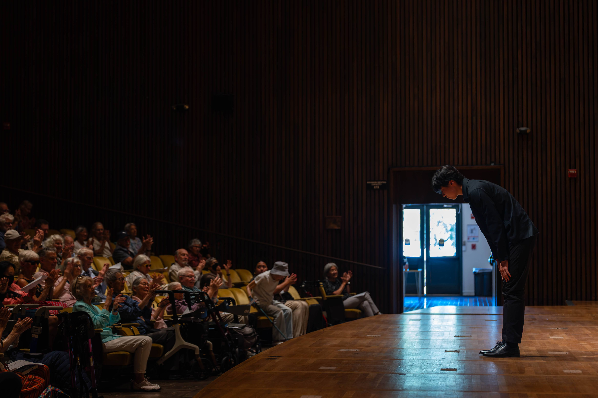

Originally from Changzhou, China, and now based in Berkeley, California, I am interested in how we find meaning through music, science, and our encounters with artificial intelligence.
I do not think our humanity needs to rest on finding something AI cannot do. That would make our sense of worth depend on a boundary that may keep moving. What matters to me is the privilege of being able to engage with what AI creates: to follow an argument, be moved by a melody, question an answer, and connect an unfamiliar idea to a life we have lived. Understanding need not belong exclusively to us to remain meaningful. Nor is it merely receiving information; it is the patient work of interpretation, judgment, and allowing what we encounter to change us.
This is the spirit in which I want to use AI: to extend inquiry while remaining responsible for what I accept and how I act. The ability to generate more does not settle what deserves our attention, what is true, or what is worth pursuing. For me, the human task is to cultivate that attention, deepen our understanding, and decide with care what to make of the possibilities before us.
